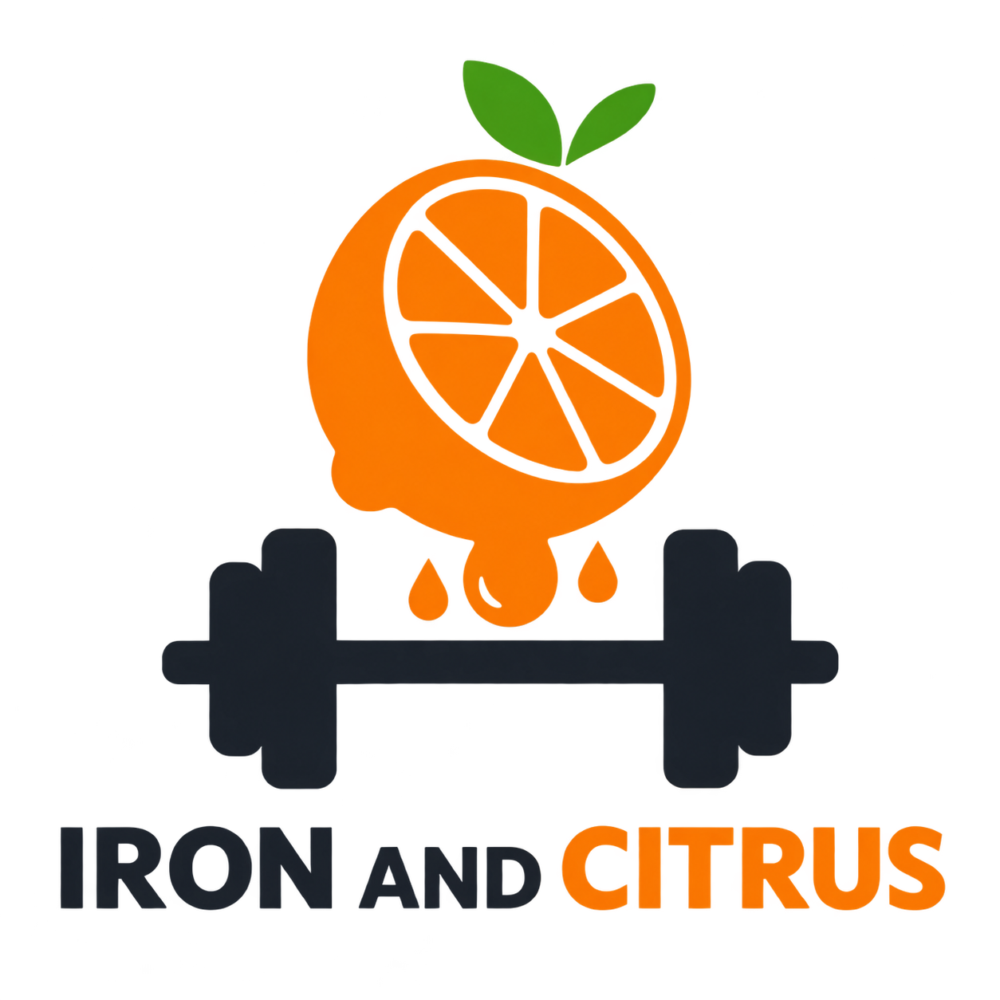

Alimentos y productos
Consulta información nutricional verificable, registra productos y compara su composición.
Explorar alimentos
Iron & CitrusFitness, nutrición y bienestar en un solo lugar. Información nutricional verificable, planes personalizados y una comunidad activa.
Consulta información nutricional verificable, registra productos y compara su composición.
Explorar alimentosGenera planes nutricionales y rutinas de ejercicio ajustados a tus objetivos.
Ver mis planesParticipa en el foro, comparte publicaciones y valida información con la ayuda de usuarios verificados.
Ir al foroGestión integral de usuarios, alimentos, validaciones y reportes de la plataforma.
Panel de administraciónLos datos de alimentos y productos pueden ser validados por usuarios con permisos de validación, garantizando información confiable para la comunidad.